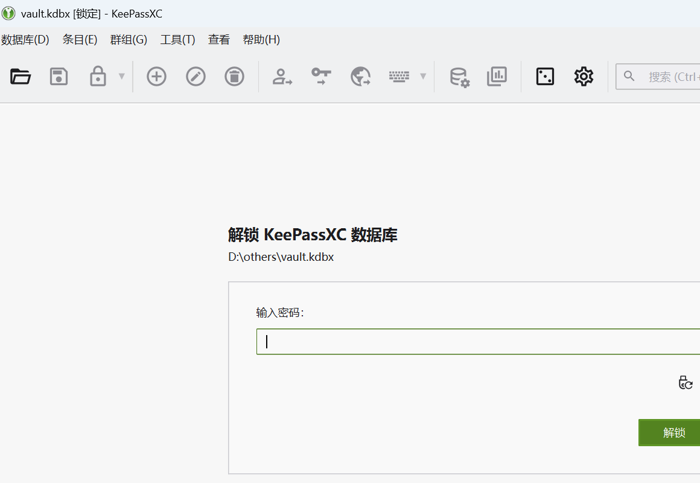
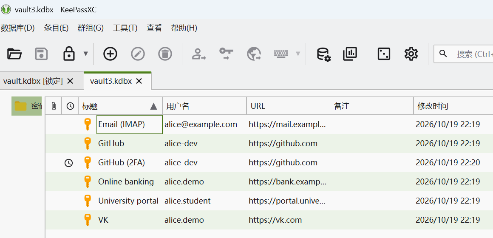
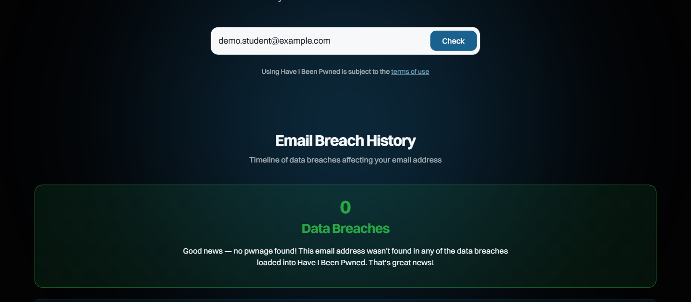
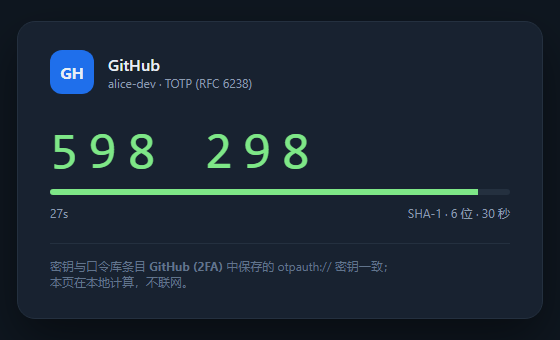

| 姓 名 | Zhang San |
| 学 号 (IDU) | 12345678 |
| Variant | 1 |
| 日 期 | 2026-10-19 |
通过一次完整的个人账号安全自查，理解「弱口令 + 复用」为什么是最常见的入侵入口， 掌握口令管理器、泄露查询与双因素认证（2FA）的正确用法，并据此形成可执行的数字卫生规则。
demo.student@example.com），用于展示分析结构与结论格式；
提交前请用你本人的真实自查结果替换第 3–6 节内容与截图。使用免费、可离线运行的 KeePassXC（便携版，无需注册账号）建立密码库。主口令按「随机词 + 数字 + 符号」构造， 长度 20 位以上，只存在于记忆中，不写入任何文件、不与其他站点复用。库内为每个账号保存独立的随机口令， 数据库文件本身用 AES-256 加密。


GitHub (2FA) 带时钟图标，表示已配置 TOTP| 账号类别 | 长度 | 字符种类 | 结论 |
|---|---|---|---|
| 邮箱 | 8–10 | 小写 + 数字 | 弱：可离线爆破，且与其他站点复用 |
| 社交（VK / Telegram） | 10–12 | 大小写 + 数字 | 中：无符号、曾出现在泄露库 |
| 学校/教务系统 | 8 | 纯数字 | 极弱：字典 + 规则即可命中 |
| 购物/支付 | 12 | 大小写 + 数字 + 符号 | 尚可，但仍复用 |
| 开发平台（GitHub 等） | 14 | 随机 | 强：由管理器生成 |
上述为自查示例，提交前请替换为你自己的真实评估结果。
在 haveibeenpwned.com 只输入邮箱地址（不输入任何口令），查询结果：
demo.student@example.com 命中 0 个泄露事件（"no pwnage found"）。
为口令库中的 GitHub (2FA) 条目配置了基于 TOTP 的 2FA：条目保存 otpauth:// 密钥，
验证时由 TOTP 算法（RFC 6238，SHA-1、6 位、30 秒）与当前时间共同算出一次性码。
即使口令在泄露中暴露，攻击者没有第二因素也无法登录；同时把恢复码离线保存，避免设备丢失后被锁死。
下图为同一密钥的 TOTP 生成界面；界面中的 6 位码与 keepassxc-cli show -t 的输出一致
（同一时刻两处均为 598 298），说明配置正确。

用无痕窗口查看自己的公开主页，陌生可见的信息包括：真实姓名、头像、城市、就读学校、生日（部分可见）、 好友列表、以及带地理位置的动态。这些信息足以支撑一次精准的钓鱼或社工攻击（例如冒充学校教务处发送「补考通知」）。
screenshots/06-social-audit.png哪些口令是弱的？长度不足 12 位、字符种类单一、且与其他站点复用的口令；本次自查中教务系统与邮箱口令属于此类， 后者还出现在公开泄露库中。
什么是 2FA？在「你知道的东西（口令）」之外再要求「你拥有的东西（TOTP 设备、硬件密钥）」或「你本身的特征」， 即使口令泄露，攻击者仍缺少第二因素。TOTP 基于共享密钥与当前时间计算 6 位码，离线可用、不依赖短信网络。
个人账号失守通常不是因为「被高级黑客盯上」，而是弱口令复用 + 已泄露凭据被撞库。口令管理器把「记住很多强口令」 变成「记住一个强口令」，2FA 再把「口令泄露」与「账号失守」解耦。数字卫生的本质是把这些动作固化成习惯和周期检查。